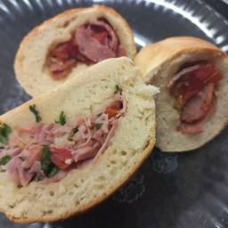

Receitas+
Receita de pão caseiro

Ingredientes
- 400ml de leite
- 3 tabletes de Fermento Biológico Fresco Fleischmann (45g)
- 1 xícara (chá) de açúcar (200g)
- 1 kg de farinha de trigo
- 1 sachê (10g) de Mais Macio Fleischmann
- 1 colher (chá) de sal
- 2 ovos
- 1/2 xícara rasa (chá) de óleo vegetal (100ml)
Créditos da Receita